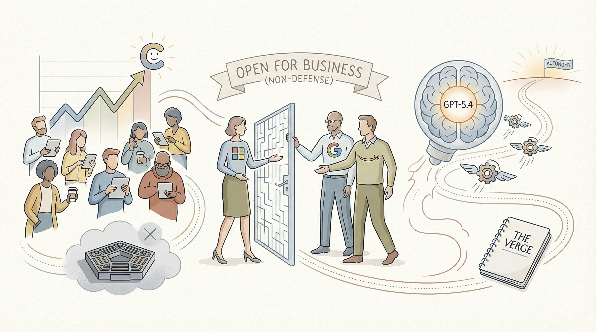

Claude应用安装量超过ChatGPT，日活跃用户数持续增长。
两克伴AIGC日报
2026-03-07 星期六

本期关注：Claude用户量反超ChatGPT并发现Firefox 22个漏洞，OpenAI发布GPT-5.4迈向自主代理，Flompt推出视觉提示构建工具提升AI交互精准度，Meta智能眼镜曝AI互动画面隐私风险，AI在网络安全与工具创新领域进展显著。
📰 行业动态
Anthropic的Claude不受与国防部纠纷影响，继续向非国防客户提供服务。
OpenAI发布GPT-5.4模型，迈向自主智能体。
Meta智能眼镜隐私风险曝光，用户AI互动画面可能被第三方查看。
🔥 今日焦点
Anthropic的Claude在两周内发现了Firefox浏览器中的22个漏洞，其中14个被归类为“高严重性”。这一发现标志着AI在网络安全领域的重要应用。Anthropic与Mozilla的安全合作，展现了AI在自动化安全测试中的潜力。这一成果不仅凸显了AI在发现潜在安全威胁方面的效率，也对AI领域的发展产生了深远影响。AI技术的进步使得安全测试更加高效，有助于提升网络安全防护水平。同时，这也为AI在网络安全领域的进一步应用提供了有力证据，预示着AI将在未来扮演更加关键的角色。
---
Flompt，一款由hkonte开发的视觉提示构建工具，旨在将提示分解为12个类型化的块（如角色、上下文、目标、约束、示例、思维链、输出格式等），并将其编译为Claude优化的XML格式。Anthropic的研究表明，提示结构比模型选择更为重要，Flompt的出现为AI领域带来了新的启示。
Flompt的核心功能是将原始提示分解，有助于用户更清晰地理解和使用AI模型。这一创新对AI领域具有重要意义，因为它提高了AI模型的可解释性和可控性，使得AI应用更加精准和高效。
一位Reddit用户u/InsideEmergency4186分享了他的AI辅助工作流程，他全天佩戴麦克风，将语音转录数据输入到OpenClaw系统中，以充当其首席助理。该系统在夜间处理数据，生成可执行输出，包括日记条目、日历事件、项目跟踪和所需工具的原型。系统通过提取主题、呈现跨日模式并基于用户提及的灵感进行扩展，表现出色。近期，该系统已开始跟踪房屋建设、为承包商建立收入管理系统，并为孩子生成辅导应用程序。作者在Substack上详细介绍了整个工作流程，并在GitHub上发布了公开的架构规范。这一案例凸显了本地处理语音数据在隐私保护方面的优势，对AI领域的影响在于展示了AI在自动化任务和辅助决策方面的潜力，同时也引发了关于数据隐私和AI应用边界的重要讨论。
📚 深度长文
本文深入探讨了AI领域巨头Anthropic与五角大楼的合作情况。作者Bruce Schneier和Nathan E. Sanders指出，随着AI模型日益同质化，品牌和道德信誉成为企业竞争的关键。Anthropic及其CEO Dario Amodei积极塑造自身为道德和值得信赖的AI提供商，这一策略在消费者和企业客户中具有显著的市场价值。文章揭示了AI行业竞争的激烈态势，以及品牌和道德在其中的重要作用，为AI从业者提供了独特的视角和深入的思考。
---
Anthropic最新发布的AI报告意外揭示了行业级的一个重大缺陷：AI的“能做”与人们实际应用之间的巨大差距。报告指出，尽管AI技术日新月异，但其在实际应用中的表现却与预期相去甚远。作者Alberto Romero通过深入剖析，揭示了这一现象背后的原因，并提出了相应的解决方案。
文章首先分析了AI技术在实际应用中面临的挑战，如数据质量、算法偏差、用户接受度等。接着，作者以Anthropic公司为例，探讨了AI技术在特定领域的应用现状，并揭示了AI在实际应用中存在的局限性。文章指出，尽管AI在理论上具有巨大的潜力，但在实际应用中，人们往往只关注其“能做”的部分，而忽略了其局限性。
本文深入探讨了美国国防部与AI公司Anthropic之间的争议，核心聚焦于一个引人深思的问题：美国政府在法律框架下是否允许对国民进行大规模监控？作者Michelle Kim指出，尽管斯诺登事件已过去十多年，但这一问题的答案并不明确。文章通过分析美国法律、政策以及技术发展，揭示了政府在AI监控方面的模糊地带。文章不仅对AI从业者和法律专家具有极高的阅读价值，更以其独特的见解和深度分析，为读者提供了一个全面了解AI监控问题的视角。
🛠️ 产品推荐
OculOS是一款基于Rust开发的轻量级桌面应用控制工具，旨在解决AI代理控制桌面应用难题。通过读取操作系统可访问性树，OculOS将按钮、文本框和菜单项等元素以结构化JSON API和MCP服务器形式暴露，实现语义控制，无需截图或像素坐标。相较于传统OCR/Vision或像素坐标方法，OculOS更高效、稳定，为AI代理提供便捷的桌面应用控制能力，助力开发者构建更智能的桌面应用。
---
Auto-Co是一款开源的自主AI公司操作系统，它并非构建在框架之上，而是一个具有明确结构的运行系统。该系统由14个具有专家身份的AI代理组成，包括CEO、CTO、CFO等角色。它采用Bash循环和Claude Code CLI，无需自定义推理和向量存储。通过共享的Markdown共识文件作为跨周期传递的接力棒，实现信息共享。对于真正的阻塞问题，通过Telegram进行人工升级，每12个周期内仅升级两次。每个周期都必须产生成果，如代码、部署等。Auto-Co旨在解决初创公司自动化运营难题，提高效率，降低成本，为技术从业者提供高效、智能的AI解决方案。
---
PlateSpinner是一款基于Kanban板的本地Web应用，旨在通过AI编码代理管理项目。用户只需指定项目目录和需求，PlateSpinner即可自动生成任务、规划实现方案并编写代码。其工作流程包括提案、规划和执行三个阶段，其中生成和规划阶段为只读模式，执行阶段则拥有完整写权限，可创建分支、提交更改并记录差异。PlateSpinner的AI能力显著提升了开发效率，为技术从业者提供了一种创新的项目管理解决方案。